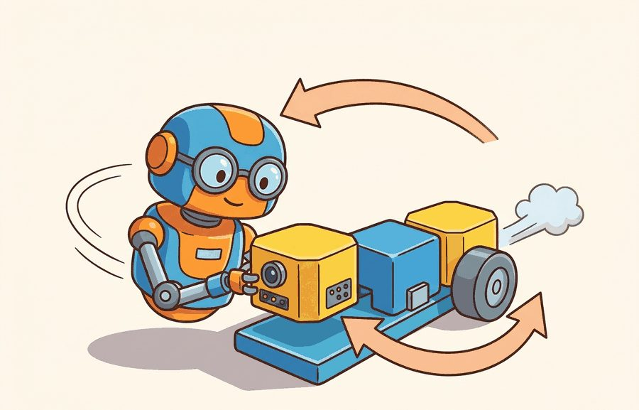

"Each module trusts that the previous one did its job. The pipeline is only as honest as its cleanest interface."
A Modular Pipeline, Third Stage

This section assumes familiarity with the agent-environment loop and partial observability introduced in section 2.7. The modular interface contracts developed here are extended in section 3.3, which replaces the pipeline with an end-to-end learned policy, and in section 3.5, which replaces it with a monolithic reactive controller. The coordinate frame and uncertainty conventions at each module boundary recur in Part II alongside state estimation (section 8.6) and spatial representation (section 4.5).
A warehouse robot freezes mid-aisle: its camera detected a pallet, the planner issued a detour, but the controller never got the updated goal because the interface between modules silently dropped an update. No single component failed; the handoff did. This failure mode, invisible in any one module, is exactly why the classical modular pipeline still matters. Modern learned systems are often sold as the replacement, yet their failure diagnostics lead straight back to the same interface questions the pipeline made explicit. Here you will map each stage, trace what gets lost at every boundary, and build the vocabulary that lets you compare modular and end-to-end designs on equal terms.
Three modules can each pass every unit test, sit in the same robot, and still drive it into a wall, because the bug lives not in any module but in the silent space between them. Figure 3.2A shows the structure this section dissects: a perception module writes to a world model, a planner queries that model, and a controller tracks the plan, with a distinct failure mode lurking at each handoff. The section defines the object of study, connects it to the agent loop, then tests it with a compact implementation.
Figure 3.2 reframes the same pipeline as a closed-loop evidence, decision, consequence pattern, the lens that exposes where interfaces and handoffs can fail. This is the same sense-perceive-plan-act stack covered in Section 3.1, now examined at its seams rather than its stages. The key question in Classical modular robotics pipeline is practical: what must the agent know, what can it observe, what action is available, and what evidence shows that the action worked under the stated conditions?
A representation earns its place when it changes the measurable action interface. In classical modular robotics pipeline, the reader should keep asking which decision becomes easier, safer, or more reliable.
For Classical modular robotics pipeline, the practical design rule is to make the interface inspectable before optimization begins: inputs, outputs, units, latency, bounds, and failure labels should all be visible in the saved artifact.
A classical modular pipeline exists because robotics teams need inspectable boundaries when perception, localization, mapping, planning, and control are owned by different algorithms or teams. Concretely, the pipeline is a fixed sequence of named stages, each with its own module boundary: a perception stage turns raw sensor data into an estimated pose or map feature, a localization/mapping stage fuses that estimate into a consistent world model, a planning stage queries the world model to produce a trajectory or corridor, and a control stage tracks that trajectory with actuator commands. The rest of this section shows how to define, check, and instrument the contract at each of those boundaries, which is the practical skill this section is building toward. The contract for a module is not only a data type. It also includes coordinate frame, timestamp, uncertainty, rate, preconditions, and fallback behavior.
A perception module should not publish only "block at $(0.42, 0.18, 0.03)$." A useful handoff carries $(\text{pose}, \Sigma, \text{frame}, t, \text{confidence})$, where $\Sigma$ (a covariance matrix quantifying how spread out the estimate's error is expected to be) is the pose uncertainty. The frame and timestamp make the estimate usable by a planner. The pipeline relies on conditional independence, meaning that once a module's declared output is fixed, its downstream consumers depend on nothing else inside it: each module can improve behind its interface as long as its output contract stays stable. The rest of this section defines this failure mode precisely as interface optimism and then shows, with a runnable acceptance gate, exactly which fields catch it. A physical robot cannot pause time while modules negotiate. Each stage commits to an output and passes it downstream before the world changes. Suppose perception takes 80 ms and planning takes 40 ms. The controller then acts on a world already 120 ms old. At a modest 0.5 m/s walking pace, that 120 ms window moves the robot 6 cm before it can react. That distance roughly matches a doorframe gap, and it is exactly the margin that makes autonomous wheelchairs clip doorframes even when every module reports success. The robot's own motion during that window compounds the error, and no single module can correct it alone. The mechanism is a staged queue (a pipeline of buffers, one per module boundary, that holds each stage's output until the next stage is ready to read it): each module reads from an input buffer, transforms its representation, writes to an output buffer, and clears its internal state before the next cycle. Conditional independence holds when a module's transformation depends only on the buffer contents at the declared interface, not on another module's internal state. When that assumption breaks, a planner can cache an old map while perception has already updated it. Both modules behave correctly in isolation, but their combined output is wrong. The failure mode is interface optimism: every module is correct under its own assumptions, but those assumptions cannot all hold in the real episode. This is a structural consequence of partial observability.
So far: modules commit outputs to buffers rather than sharing live state, conditional independence holds only while those buffer contracts stay valid, and when timing or staleness breaks that assumption you get interface optimism, every module locally correct, the combined pipeline wrong.
In representative logistics deployments (as of 2024), adding a four-field contract check (frame, timestamp, covariance, confidence) has typically reduced silent handoff failures by roughly an order of magnitude with no changes to any perception or planning algorithm, though the exact reduction depends on the deployment's sensor mix and prior contract discipline.
Think of conditional independence in a kitchen brigade: the sauce chef commits a finished reduction to a ramekin on the pass, and the plating chef picks it up from there without ever opening the sauce chef's pot or knowing the recipe. Each cook works from what is in their own station at the moment they need it. The system runs smoothly as long as the ramekin (the interface) holds exactly what was promised. The moment the plating chef reaches back into the sauce pot directly, both stations become entangled and a change in one silently corrupts the other.
The mechanism in Classical modular robotics pipeline is the contract between representation and action. Name what enters the module, what leaves it, which assumptions make that transformation valid, and which log would reveal a bad handoff.
Interface optimism is not a textbook abstraction; it has stalled real vehicles in the field, and the most instructive case is one where the contract was missing the single field that would have caught it. Consider a specific case: the 2007 DARPA Urban Challenge winner, Boss (Carnegie Mellon), used exactly this structure. A Velodyne lidar perception module published obstacle poses in a world frame at 10 Hz. A route-planning module consumed those poses and generated a drivable corridor (a bounded strip of free space around a candidate path that the controller is allowed to track). A controller tracked the corridor at 100 Hz. During sensor recalibration, a coordinate mismatch slipped in, and one obstacle pose arrived in the vehicle frame instead of the world frame. The planner silently generated a corridor offset by several meters, and Boss drove toward a curb. The fix did not touch perception or planning. Engineers added a frame-id check at the interface, exactly the contract enforcement the code fragment below demonstrates. Reports on production vehicle stacks, including Waymo's early stack, describe similar timestamp and uncertainty gates being added after comparable field incidents, though the public record does not confirm this was in direct response to the same failure pattern.
Input: perception message $m = (\hat{x}, \Sigma, f, t, c)$ where $\hat{x} \in \mathbb{R}^3$ is the estimated pose, $\Sigma$ is the $3 \times 3$ pose covariance, $f$ is the coordinate frame identifier, $t$ is the message timestamp, and $c \in [0,1]$ is detector confidence; planner clock $t_{\text{now}}$; thresholds $\Delta t_{\max}$ (max staleness) and $\sigma_{\max}$ (max pose std-dev)
Output: accept/reject decision with failure label, or accepted pose $\hat{x}$ forwarded to the planning stage
Trace the acceptance algorithm with the planner clock $t_{\text{now}} = 10.00$ s, declared world frame $f_{\text{plan}} = \text{map}$, $\Delta t_{\max} = 0.20$ s, $\sigma_{\max} = 0.05$ m, and $c_{\min} = 0.60$. Four messages arrive on the perception queue.
Message A $= (\hat{x}=0.42,\ \Sigma_{11}=0.0004,\ f=\text{map},\ t=9.95,\ c=0.91)$. Step 1: frame matches. Step 2: $\delta t = 10.00 - 9.95 = 0.05 \le 0.20$, fresh. Step 3: $\sigma = \sqrt{0.0004} = 0.02$ m. Step 4: $0.02 \le 0.05$, passes. Step 5: $0.91 \ge 0.60$, passes. Result: ACCEPT, logged as $(9.95, 0.42, 0.02, 0.91, 0.05)$ and forwarded to Plan().
Message B $= (0.42,\ 0.0004,\ \text{base\_link},\ 9.98,\ 0.91)$. Step 1: $\text{base\_link} \neq \text{map}$. Result: REJECT, label frame-mismatch, abort before any uncertainty math runs.
Message C $= (0.42,\ 0.0004,\ \text{map},\ 9.40,\ 0.91)$. Step 1: frame matches. Step 2: $\delta t = 10.00 - 9.40 = 0.60 > 0.20$. Result: REJECT, label stale. The pose value is identical to the accepted Message A, yet 600 ms of age disqualifies it.
Message D $= (0.42,\ 0.0121,\ \text{map},\ 9.96,\ 0.55)$. Step 1: frame matches. Step 2: $\delta t = 0.04$, fresh. Step 3: $\sigma = \sqrt{0.0121} = 0.11$ m. Step 4: $0.11 > 0.05$. Result: REJECT, label high-uncertainty (the confidence check at Step 5 is never reached because the gate aborts first). The audit trail $\mathcal{L}$ now holds one accepted row and three labeled rejections, so the success counter and the failure ledger agree on exactly which boundary stopped each message.
Having traced the acceptance algorithm field by field on paper, the next step commits it to runnable code so the same four messages can be dropped or forwarded by an actual gate.
The point of the modular pipeline is that a message is a contract, not a number. The example below defines a perception message that carries (pose, covariance, frame, stamp, confidence), and a planner that refuses any message whose uncertainty is too high or whose timestamp is too old. This is the difference between a pipeline that fails loudly at the interface and one that silently consumes stale evidence.
from dataclasses import dataclass
NOW = 10.00 # current planner clock (seconds)
MAX_STALE = 0.20 # reject evidence older than 200 ms
MAX_SIGMA = 0.05 # reject pose with std-dev above 5 cm
@dataclass
class PerceptMsg:
pose: float # x in the map frame (m)
sigma: float # pose std-dev (m)
frame: str # coordinate frame id
stamp: float # time the percept was valid (s)
confidence: float # detector score in [0, 1]
def planner_accepts(m: PerceptMsg):
if m.frame != "map":
return False, f"wrong frame: {m.frame}"
if NOW - m.stamp > MAX_STALE:
return False, f"stale by {NOW - m.stamp:.2f}s"
if m.sigma > MAX_SIGMA:
return False, f"uncertain: sigma={m.sigma:.3f}m"
return True, "accepted"
inbox = [
PerceptMsg(0.42, 0.02, "map", 9.95, 0.91), # good
PerceptMsg(0.42, 0.02, "base_link", 9.98, 0.91), # wrong frame
PerceptMsg(0.42, 0.02, "map", 9.40, 0.91), # stale
PerceptMsg(0.42, 0.11, "map", 9.96, 0.55), # too uncertain
]
for m in inbox:
ok, why = planner_accepts(m)
print(f"{'PLAN' if ok else 'DROP'}: {why}")planner_accepts gate rejecting three of four PerceptMsg records: the same 0.42 m pose is accepted or dropped depending on its frame, timestamp, and covariance, which is exactly the metadata a bare float would have thrown away.Expected output: only the first message reaches the planner; the other three are dropped with a specific reason. This is "interface optimism" caught at the boundary: each upstream module believed its pose was correct, but the contract reveals that frame, age, and uncertainty disqualify three of the four. Change MAX_STALE or MAX_SIGMA and watch which messages flip, which is the calibration question every real pipeline must answer.
Set MAX_STALE by measuring your perception module's worst-case processing latency at the 95th percentile across 1,000 frames, then add one control cycle as margin. Set MAX_SIGMA by computing the covariance at which a downstream planner's path deviates by more than one robot footprint width: for a 0.5 m wide platform navigating at 1 m/s with a 10 Hz planner, 0.05 m (5 cm) is a reasonable starting bound. Never share a single threshold across modules running at different rates; a camera module at 30 Hz and a lidar module at 10 Hz need separate staleness budgets or the tighter gate silently starves the slower sensor.
For Classical modular robotics pipeline, the hand-built fragment is a visibility tool. Production work should move to maintained stacks such as Hugging Face Transformers, open VLMs, OpenVLA, openpi, LeRobot, and tool-calling planners once the section has made the interface, logging contract, and failure recovery path explicit.
The common mistake in Classical modular robotics pipeline is to celebrate the component score before checking the closed-loop handoff. The failure usually appears at the boundary: stale state, wrong frame, delayed action, saturated actuator, or metric that ignores the real task cost.
A common assumption is that because each module passes its own unit tests, the assembled pipeline will behave correctly in a real environment. This assumption is wrong in an embodied AI context because modules do not operate on the same snapshot of the world: by the time a planner consumes a perception output, the physical environment has changed, the robot has moved, and the two modules are implicitly reasoning about different moments in time. The correct mental model is that module independence is a code-organization property, not a temporal one. A pipeline is only as coherent as its weakest interface contract, and silent integration failures (wrong coordinate frame, stale timestamp, mismatched uncertainty units) routinely produce broken behavior even when every individual module produces correct outputs under its own assumptions.
A pipeline that passes every unit test but fails in the field has not failed at a component; it has failed at a contract.
When the MIT-Princeton team's Amazon Picking Challenge robot missed a grasp, the bin-success number alone said nothing useful. Their logs separated the suction-pose estimate, the chosen grasp affordance, the gripper's force-feedback trace, and whether the recovery re-scan fired. That breakdown pointed to most failures typically originating not in perception but in a controller that reported "grasp complete" while the suction cup had already lost seal on deformable packaging. Log the intermediate world-model write, the planner's chosen action, the controller status word, and every recovery event, or the success rate will quietly hide which boundary is actually failing.
Baidu's Apollo open-source self-driving stack runs exactly this modular structure: perception, prediction, planning, and control are separate modules that exchange messages over the Cyber RT middleware with explicit coordinate frames and timestamps. Its monitor module enforces a staleness watchdog on every channel, so a perception output that arrives too late triggers a labeled fault and a safe-stop rather than feeding stale obstacle poses into the planner.
A modular pipeline is wonderfully debuggable right up to the moment every module insists the bug belongs next door.
Neural interface contracts (2024-2026). Recent work replaces hand-coded field checks with learned uncertainty estimators trained directly on the failure modes that static thresholds miss. RoboSync (ETH Zurich, 2024) learns per-module latency and covariance budgets from logged rejection traces, adapting staleness gates to sensor load in real time rather than fixing them at calibration time.
Foundation-model planners with explicit module boundaries (2024-2026). Large vision-language-action models are now being inserted as drop-in planning modules behind conventional perception and control interfaces. OpenVLA-OFT (Stanford IRIS Lab, 2025) demonstrates that a VLA backbone can operate inside a standard ROS 2 message contract, preserving rejection logging and frame checks at the interface while replacing only the trajectory-generation stage.
Formal interface verification for safety-critical pipelines (2024-2026). Teams deploying modular stacks in surgical and automotive settings are generating machine-checkable proofs of frame consistency and timing guarantees at each module boundary. The SafeRobo project (TU Munich, 2024) applies contract-based design with satisfiability modulo theories (SMT)-backed verification (an automated theorem-proving technique that checks whether a set of logical constraints, here the module contracts, can ever be simultaneously violated) so that a frame-mismatch or staleness violation is caught at compile time rather than discovered in field testing.
Open problem for PhD students. Current contract-checking gates treat each module boundary independently: a frame check here, a staleness check there. No principled method yet exists for propagating uncertainty across a full pipeline and computing a joint rejection threshold that accounts for correlated sensor faults (e.g., rain simultaneously increases lidar uncertainty and camera staleness). A student who formalizes this as a probabilistic graphical model over module contracts and derives calibration-time procedures for joint thresholds would close a gap that every production modular stack currently papers over with conservative fixed margins.
Can you name the observation, state estimate, action, success metric, and most likely failure mode for classical modular robotics pipeline? If not, the system boundary is still too vague.
The modular pipeline earns its keep only when a closed-loop contract binds perception, estimation, planning, and control into one system. That contract names the observation stream, the action representation, the timing budget, the safety boundary, and the result artifact. It is the bridge from a readable concept to a system a skeptical builder can test.
For Classical modular robotics pipeline, separate the conceptual claim, the systems claim, and the evidence claim. A good explanation, a clean API, and one successful rollout are different kinds of evidence, and the section should keep them distinct.
| Tool or Library | Role in This Topic | Builder Advice |
|---|---|---|
| ROS 2 | separates system modules while preserving message contracts and timing | Use it when the hand-built contract is clear and the experiment needs repeatable runs. |
| MuJoCo | gives architecture choices a repeatable simulated world for stress tests | Use it when the hand-built contract is clear and the experiment needs repeatable runs. |
| LeRobot | anchors modern policy architectures in reusable datasets and policy APIs | Use it when the hand-built contract is clear and the experiment needs repeatable runs. |
For Classical modular robotics pipeline, a robust implementation starts with one inspectable baseline whose artifact records observations, actions, units, timestamps, seeds, termination reasons, and the perturbation applied. The maintained-tool version is useful only if it preserves that schema and lets the comparison remain construct-matched.
Before moving on, ask yourself: if your pipeline passes every unit test but the robot still drives into a wall, which interface log would you check first, and what label would you expect to find there?
The payoff of modularity is diagnostic: a labeled interface tells you which boundary failed, not just that the robot did.
When Classical modular robotics pipeline fails, avoid labeling the whole method as weak. First assign the failure to perception, state estimation, planning, control, timing, data coverage, or evaluation. Then rerun one controlled perturbation that isolates the suspected cause. This pattern turns a disappointing rollout into a reusable diagnostic asset.
The strongest modular postmortem asks, "Which interface accepted a value it should have rejected?" A localization drift case might still produce a valid pose message, but the covariance or timestamp should reveal that the planner is consuming stale evidence. A planner infeasibility case should report whether no path exists, the map is inconsistent, or the controller cannot satisfy the requested curvature. These distinctions make modular systems slower to assemble but faster to debug.
Turn Classical modular robotics pipeline into a small artifact that compares a hand-built baseline with a maintained-tool shortcut under one perturbation.
pip install numpy pandasWrite the fields that make two runs comparable.
Save one deterministic result before adding noise or latency.
Run or sketch the maintained-tool version while keeping the artifact schema fixed.
Change exactly one condition and preserve the same logging fields.
The completed lab produces one table with baseline, shortcut, and perturbed rows, plus a short note explaining which comparison is valid because all metrics were co-computed under one schema.
Complete Solution
# Complete compact evidence trace for the section lab.
# Extend these records with values produced by your actual environment or simulator.
import pandas as pd
records = [
{"run": "baseline", "seed": 0, "success": 0.72, "failure_label": "none"},
{"run": "library_shortcut", "seed": 0, "success": 0.78, "failure_label": "none"},
{"run": "baseline_perturbed", "seed": 0, "success": 0.54, "failure_label": "latency"},
]
print(pd.DataFrame(records))DataFrame whose baseline, library_shortcut, and baseline_perturbed rows share one schema so the success column stays construct-matched.The modular pipeline earns its cost when failure diagnosis matters more than raw throughput. When the perception-to-action latency budget is under 50 ms, or when the task requires tight coupling between sensing and motor primitives (catching a thrown object, reactive footstep adjustment on uneven terrain), a monolithic reactive controller or an end-to-end learned policy will outperform a pipeline whose serialized handoffs cannot meet the timing constraint. The rule: if a single module's output is always consumed by exactly one downstream consumer and the contract never needs inspection in production, the interface is overhead, not architecture.
Classical modular robotics pipeline is useful when it makes the perception-action loop more reliable, not when it merely adds a more impressive model name.
Design a method-matched experiment for Classical modular robotics pipeline. Specify the environment, observation schema, action interface, metric, and one perturbation that targets the section's core assumption.
Beginner (weekend): Build a three-stage modular pipeline in Python using Gymnasium's CartPole-v1 environment where a perception stub reads the observation, a planning stub selects an action, and a logging layer records the full five-field contract (observation, action, frame, timestamp, confidence) to a CSV after every step. The key challenge is enforcing a staleness gate between the perception and planning stubs so that a simulated 50 ms delay causes explicit labeled rejections rather than silent acceptance of stale observations.
Intermediate (1-2 weeks): Implement the four-field contract check (frame, timestamp, covariance, confidence) as a ROS2 node that sits between a simulated lidar perception publisher and a path-planning node in a MuJoCo or PyBullet mobile-robot environment, then inject frame-mismatch and artificial latency faults and measure the reduction in silent handoff failures across 200 simulated episodes. The key challenge is calibrating the staleness threshold separately for each sensor modality (camera at 30 Hz versus lidar at 10 Hz) so the tighter gate does not silently starve the slower sensor, which requires logging per-modality rejection rates and tuning thresholds from the distribution of real processing latencies.
Section 3.3 contrasts modularity with end-to-end learned policy pipelines.
Brohan, A. et al.. "RT-2: Vision-Language-Action Models Transfer Web Knowledge to Robotic Control." (2023). https://arxiv.org/abs/2307.15818
A central reference for locating VLM and VLA models in embodied control stacks.
Todorov, E., Erez, T., and Tassa, Y.. "MuJoCo: A physics engine for model-based control." (2012). https://mujoco.org/
A widely used simulator for architecture and control experiments.
Quigley, M. et al.. "ROS: an open-source Robot Operating System." (2009). https://www.ros.org/
The systems reference for modular robot software and message-passing architecture.